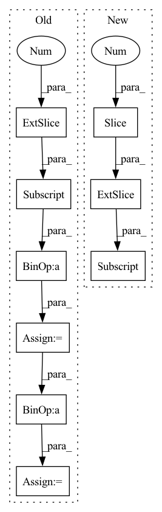

Pattern ID :14793
Before Change
inter_area = inter_hw[:, 0] * inter_hw[:, 1]
bboxes_trues_area = (bboxes_trues[:, 2] - bboxes_trues[:, 0]) * (bboxes_trues[:, 3] - bboxes_trues[:, 1])
bboxes_preds_area = bboxes_pred_hw[:, 0] * bboxes_pred_hw[:, 1]
union_area = bboxes_trues_area + bboxes_preds_area - inter_area
iou = inter_area / (union_area + self.epsilon)
return 1 - iou ** 2
After Change
// bboxes_preds_area = pred_hw[:, 0] * pred_hw[:, 1]
// union_area = bboxes_trues_area + bboxes_preds_area - inter_area
// iou = inter_area / (union_area + self.epsilon)
true_top_left, true_bottom_right = bboxes_trues[:, :2], bboxes_trues[:, 2:4]
true_hw = true_bottom_right - true_top_left
iou = __bbox_iou__(true_top_left, true_bottom_right, true_hw, pred_top_left, pred_bottom_right, pred_hw, epsilon=self.epsilon)
return 1 - iou ** 2
In pattern: SUPERPATTERN
Frequency: 3
Non-data size: 9
Instances Fragment ID: 48693941
Project Name: leondgarse/keras_cv_attention_models
Commit Name: df3cf1ce0ac4b02a9c73496b1a583b9a892c7b0a
Time: 2022-03-25
Author: leondgarse@gmail.com
File Name: keras_cv_attention_models/coco/losses.py
M Class Name: AnchorFreeLoss
N Class Name: AnchorFreeLoss
M Method Name: __iou_loss__(5)
N Method Name: __iou_loss__(5)
M Parent Class: tf.keras.losses.Loss
N Parent Class: tf.keras.losses.Loss
M File Name: keras_cv_attention_models/coco/losses.py
N File Name: keras_cv_attention_models/coco/losses.py
M Start Line: 152
M End Line: 160
N Start Line: 189
N End Line: 191
Before Change
h_half = o_boxes[:, :, 3] / 2
o_boxes[:, :, 0] = o_boxes[:, :, 0] - w_half
o_boxes[:, :, 1] = o_boxes[:, :, 1] - h_half
o_boxes[:, :, 2] = o_boxes[:, :, 0] + w_half
o_boxes[:, :, 3] = o_boxes[:, :, 1] + h_half
return o_boxes.squeeze(0)
After Change
torch.Tensor: torch.Tensor(N,4) as xmin ymin xmax ymax
wh_half = boxes[:, 2:] / 2
x1y1 = boxes[:, :2] - wh_half
x2y2 = boxes[:, :2] + wh_half Fragment ID: 48693918
Project Name: borhanmorphy/fastface
Commit Name: 6ee4e76aa1ee02b6cddc42fa8cc2d2a0f89970f8
Time: 2021-09-16
Author: borhano.f.42@gmail.com
File Name: fastface/utils/box.py
M Class Name: AnonimousClass
N Class Name: AnonimousClass
M Method Name: cxcywh2xyxy(1)
N Method Name: cxcywh2xyxy(1)
M Parent Class:
N Parent Class:
M File Name: fastface/utils/box.py
N File Name: fastface/utils/box.py
M Start Line: 72
M End Line: 82
N Start Line: 111
N End Line: 116
Before Change
An instance of torch.Tensor of shape (3,) representing
the origin of the camera in the world frame.
return cam_extrinsic[:3, -1]
def generate_rays(
self,
pixel_coords: torch.Tensor,After Change
the origin of the camera in the camera frame.
// ray starts from the pixel centers on the near plane
t_near = (-(z_near) / ray_dir[:, 2] ).unsqueeze(-1)
ray_origin = t_near * ray_dir
return ray_origin
Fragment ID: 48693914
Project Name: dvelopery0115/torch-nerf
Commit Name: 88d3df6fb638ef8cf6fae651ddfc119ed37d5239
Time: 2022-06-18
Author: dreamy1534@kaist.ac.kr
File Name: src/renderer/ray_samplers.py
M Class Name: RaySamplerBase
N Class Name: RaySamplerBase
M Method Name: _get_ray_origin(3)
N Method Name: _get_ray_origin(2)
M Parent Class: object
N Parent Class: object
M File Name: src/renderer/ray_samplers.py
N File Name: src/renderer/ray_samplers.py
M Start Line: 78
M End Line: 78
N Start Line: 65
N End Line: 83